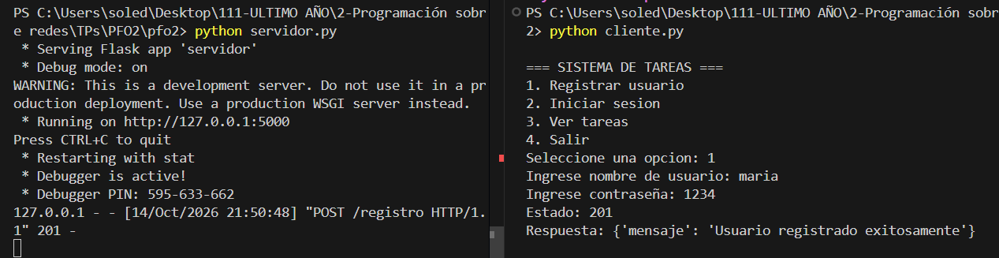
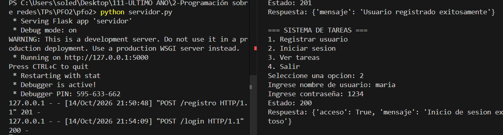
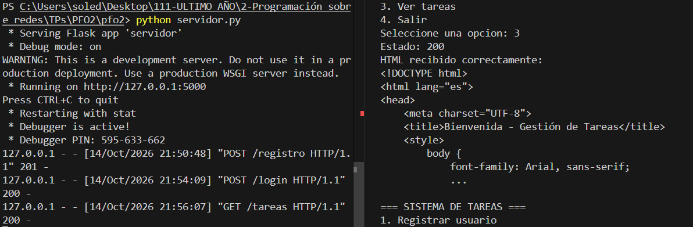
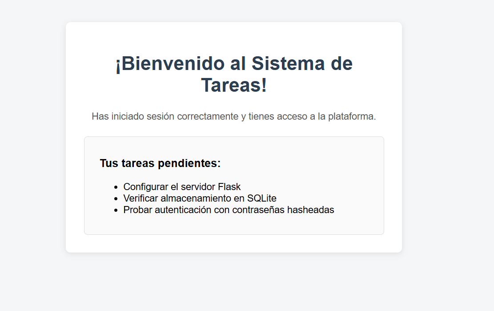
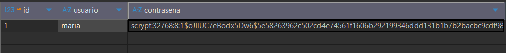

API REST con Flask, persistencia en SQLite y cliente por consola
Este proyecto consiste en un servidor desarrollado en Flask que expone una API para el registro, inicio de sesión y visualización de tareas, implementando buenas prácticas de seguridad como el hasheo de contraseñas y almacenamiento en base de datos SQLite.
usuario y contraseña. Valida y guarda el usuario en la base de datos con su contraseña encriptada (hash).El hasheo de contraseñas es fundamental por seguridad. Si guardáramos las contraseñas en texto plano y la base de datos sufriera una filtración o acceso no autorizado, los datos de todos los usuarios quedarían expuestos de inmediato.
Las funciones de hash son unidireccionales (no se pueden revertir) y con el uso de sales (salt) protegen contra ataques de fuerza bruta y tablas arcoíris (rainbow tables). De esta manera, ni siquiera los administradores o desarrolladores pueden conocer la contraseña real de los usuarios.
database.db), lo que facilita enormemente mover o clonar el proyecto.import sqlite3), siendo rápida y confiable para proyectos de escala pequeña a mediana.pip install -r requirements.txtpython servidor.pypython cliente.py
Registro de usuario

Inicio de sesión

Vista de tareas en el navegador

Página HTML de tareas

Base de datos SQLite